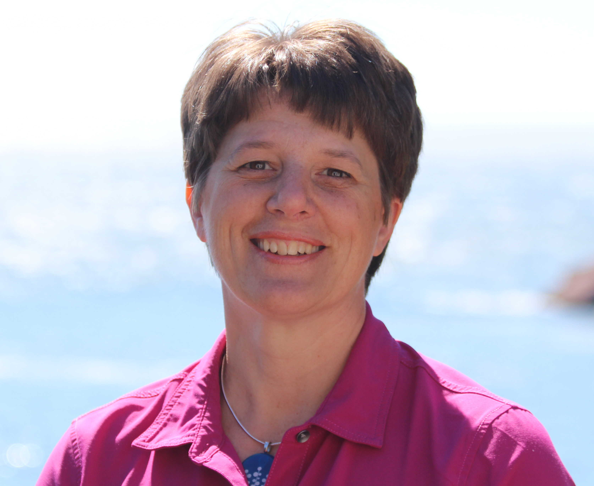
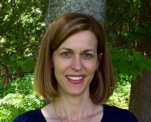
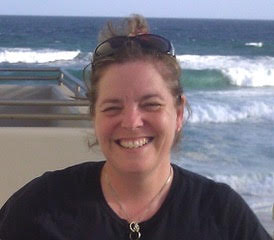

Archstone Physiotherapy And Wellness Centre - 70 Hampton Road, Rothesay, NB
About Archstone
At Archstone Physiotherapy and Wellness Centre our goal is simple: to improve the quality of life of those that we treat with professional, confidential and compassionate care. We will schedule ample time so we can understand your story and we can work together to determine the right treatment for you. Our main focus is to help you move and function better. As such we focus on active treatment strategies that will teach you the movement skills that will get you feeling better and staying better!
The purpose of Archstone Physiotherapy and Wellness Centre is to develop a centre of excellence for the provision of physiotherapy and other allied health services. We will provide a high quality, evidence based practice, while striving to establish respectful partnerships with clients.
We are extremely proud to have staff members who have demonstrated leadership and exceptional skill in their chosen areas of practice.
Archstone is the first clinic in the Saint John region to focus on the comprehensive treatment of abdominal and pelvic health problems for women, men, and children. The pelvis is the foundation of support for your body and we believe that it should get the attention it deserves. Through education, training, and experience we are able to develop customized treatment approaches that fit each individual. Research has consistently demonstrated that using physiotherapy treatments such as biofeedback, joint mobilizations, stretching, strengthening and trigger point release can significantly reduce or eliminate pelvic floor disorders.
We feel that knowledge is the first step on your journey to wellness. Frances has been a guest lecturer at UNBSJ and frequently speaks to a variety of groups, including gyms, places of employment, community groups etc. If you would be interested in having our team speak to your group on women’s health issues, please contact the clinic and we will be thrilled to arrange a convenient time.
Who We Are

Frances Roderick, Owner, PT
Frances graduated from Dalhousie University School of Physiotherapy in 1992 and has been working mainly in the field of orthopedics and sports medicine since then. Frances continues to enjoy working with people with a variety of musculoskeletal disorders. However, over the past several years, she has focused her post graduate training in the area of pelvic and abdominal rehabilitation for both women and men. She believes in an active approach, looking at the whole body to get to the root of the problem, using a combination of therapeutic exercise, education, and manual therapy.
Outside the clinic, Frances leads an active lifestyle with her husband and four children. Together they enjoy hiking, camping, skiing, and lots of time in the basketball gym!

Sue Kean, PT
Certified Hand Therapist
Certified Hand Therapist
For the past 25 years, Sue has developed her practice in the area of Hand Therapy in both hospital and private settings. In 2002 she achieved her goal of becoming a Certified Hand Therapist. Certified Hand Therapists demonstrate exceptional dedication to their profession, and a desire for advanced competency. Certification is voluntary and difficult to attain and involves meeting rigorous standards - such as 4000 hours of practice, and advanced study and training - to pass the certification exam.
Since then, her post-graduate training has focused on advancing her knowledge of managing conditions and injuries affecting the upper extremity. Her client-centered treatment approach helps provide her patients with the tools to return to daily activities whether that is at work, home or play.

Denise Hollway, PT
BSc. PT, MSc. Rehabilitation Research
BSc. PT, MSc. Rehabilitation Research
It is an exciting time to be a pelvic and women’s health physiotherapist! When I first graduated in 1983 as a physiotherapist, women’s health and pelvic health physiotherapy was not even on the radar. Women were told to do Kegel exercises, often without any coaching, and that was that.
What triggered my interest in becoming a pelvic floor physiotherapist is the same reason many women seek my help now. After I completed my 2nd physiotherapy degree in 2009 , I leapt into cycling and swimming however my 50 year old body had not kept up with my physical ambition. My low back was a problem so I started weight lifting. My pelvic floor complained every time I lifted weights. So off to the pelvic physio I went to find out I had a pelvic organ prolapse.
Now, we understand that the ability to manage intraabdominal pressure is one component of regaining pelvic muscle floor function. Hypopressive breathing allowed me to regain my athletic confidence and it is an exercise I use to introduce women in the post-natal and 3rd Age stages of life to their pelvic floor, their posture and most importantly , their breathing.
Completing the 3rd Age Woman Peri-to-Post Menopause Certification with Burrell Education gave me health information to support the recovery of my athleticism with pelvic organ prolapse. Of course the next step was to become a Holistic Core Restore ® coach. I am passionate about assisting women to reclaim their physical selves through pelvic health rehabilitation at all stages of their lives. I provide my patients with exercises, health information and an approach to their pelvic health condition. The HCR® program supports that process by providing my patients with weekly video and coaching contact.

Patty Steele, PT
Patty is from Quispamsis. She Studied Physiotherapy at Dalhousie University graduating in 1992 and has practiced primarily in the field of paediatrics for the past 25 years. Patty made her way to Australia where she completed a coursework masters of Paediatric Physiotherapy from the University of Queensland followed by a Specialist Certificate in Paediatric Orthopaedic Physiotherapy from the University of Melbourne. Patty has most recently completed additional training in the area of pelvic health for children.
Patty has worked in hospitals and in the community delivering care for government and non profit organizations as well as in private practice. She has experience working with children with a number of conditions and concerns including delayed development, cerebral palsy, prematurity, Down syndrome, orthopaedic conditions, alignment issues, foot problems, chronic pain and coordination concerns.
Chrissy Swan, Speech Pathologist
(B.A., M.Sc S-LP)
(B.A., M.Sc S-LP)
Chrissy is a Speech-Language Pathologist with 15 years experience. She provides assessment and treatment to both children and adults.
She is based primarily at Archstone Physiotherapy and Wellness Centre, a multidisciplinary clinic in Rothesay, New Brunswick, however, she may accommodate students in the private and public school systems, by offering "in-school" appointments on an individual case basis.
Chrissy is a member in good standing with the New Brunswick Association of Speech-Language Pathologists (NBASLPA) and Speech-Language Pathology and Audiology Canada (SAC). She obtained a Master of Science in Speech-Language Pathology from Dalhousie University in 2004. Before that, she received a Bachelor of Arts with a major in Psychology from University of New Brunswick in 2000.
Chrissy has had the opportunity to work in a variety of clinical settings across the country. Her career began as a sole charge clinician in St. Stephen at the Charlotte County Hospital providing services for an array of disorders involving both children and adults on an inpatient and outpatient basis. She subsequently held a position with the Nova Scotia Hearing and Speech Center in Halifax, focusing on pediatrics. She then moved to Vancouver, British Columbia, where she worked in a private clinic seeing a variety of clients, most uniquely those requiring foreign accent modification.
Chrissy looks forward to working with each family and client to ensure that "everyone has a voice."
Sharon Messer, RMT, RAp
Sharon is a registered massage therapist and acupuncturist with over 17 years of experience. Sharon provides treatment for a variety of conditions and her training in both massage therapy and acupuncture allows her to provide the most effective care for each individual patient, at every visit. Sharon has used acupuncture to treat a variety of women’s health conditions including IVF support, endometriosis and pelvic pain.
Well respected by her peers, Sharon has served on the boards of the NBMA and is currently the bylaws director for the Maritime Association of Registered Acupuncturist.
Darlene Mapp, RMT
Darlene has been a Registered Massage Therapist since graduating at the top of her class in 2000. She has worked in many areas from motor vehicle, sport, overuse and work related injuries to providing pregnancy treatments and infant massage instruction. She works with all ages from the very young to the young at heart. In 2004, she began working with breast cancer patients treating them post-surgical for compromised shoulder range of motion as well as scar healing and management. Darlene is also a certified yoga teacher offering a variety of classes, one of them being specifically designed for women with any cancer diagnosis. Collaborating with the Breast Health Program through St. Joseph’s Hospital, together the goal is to provide best practice treatment approaches for optimal outcomes. In 2002, she received her masters certification in myofascial release. She has held a number of positions with the College of Massage Therapists of New Brunswick with the most recent being the Chair of the Complaints Committee. She is also a member of the Grants Committee for the Saint John Community Foundation and has recently been nominated to sit on the Board. Darlene has a genuine passion for giving back to the community through her volunteerism.
Outside of work, Darlene is a fitness enthusiast and can be found at the gym most days of the week. When she is not working out, both she and her husband are chauffeuring, watching and cheering on their 4 kids in soccer, football, as well as in their academic and life endeavours.

Mindy Murphy, Office Administrator
Mindy joined the Archstone team as a part time administrative assistant in August of 2018 bringing a wealth of administrative experience along with her. Mindy and her husband Mike reside in Quispamsis with their 3 children and 2 dogs and 2 cats.
In her free time Mindy loves to spend time with her family and friends. She loves to read and to spend time doing outside activities.
We look forward to working together with you, to help you discover your optimal function.